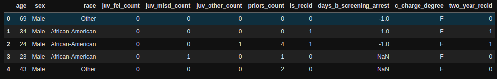

Pandas
Get data with NaN values
df[df.isna().any(axis=1)]
Pillar un valor filtrando DF con condición múltiple:
valor = df[(df["columna_x"] == x) & (df["columna_x"] == y)]["columna"].iloc[0]
Si vas a crear un nuevo DF, hacerlo con .copy() ⚠️⚠️⚠️
Para evitar el error de "A value is trying to be set on a copy of a slice from a DataFrame."
# df_b es un nuevo DF, sin el .copy() se guarda una vista y sale un warning si quieres meterle movidas
df_b = df_mysql[df_mysql["fecha"] > datetime(2020,6,9,0,0)].copy()
df_b["deficit"] = df_b["motos_disponibles"] - df_b["iniciadosMySQL"]
Take DF columns/rows by column/row index
df.iloc[row,col]
df_smaller = df.iloc[1:,:] # from row 1 to end (skiping row 0),and all columns
Devolver fila completa con valor máximo
df.loc[df['Value'].idxmax()]
Hacer un count groupby y devolviendolo como DF decente
df.groupby(['col1', 'col2']).size().reset_index(name='counts')
Aplicar función custom para DF usando Lambda
Añade un nuevo campo al dataframe dependiendo de una condición calculada por función. Con list comprehension no se pueden utilizar funciones custom.
Se puede acceder al campo de la fila ya sea con row["campo"] o row.campo
df["mov"] = df.apply(lambda row: False if viaje_terminado_cerca(row["pos_init"], row.pos_fin) else True, axis=1)
df = df[df["mov"] == True]
Aplicar función a un índice
Como el df.apply pero para aplicarselo al índice (si por ejemplo tienes una fecha como índice).
df_serie["week_day"] = df_serie.index.map(lambda fecha: fecha.weekday())
Apply filter to some values
Example case you want to replace 0s for a new value.
mask = df["columna"] == 0
df.loc[mask, "columna"] = new_value
Column with list to rows
You have the next df:
user items
0 1 101
1 2 [102, 103]
df.explode("items")
And you get:
user items
0 1 101
1 2 102
1 2 103
Rows to columns using unstack
You have this DF

# Group by the columns
df = df.groupby(["race", "age"]).size()
df
race age
African-American 18 2
19 22
20 109
21 191
22 187
...
Other 63 1
64 1
66 1
69 2
70 1
Length: 263, dtype: int64
Then do a unstack
df = df.unstack("race").reset_index().fillna(0)
df.head()
GeoPandas
Create a uniform square grid within a bounding box
import geopandas as gpd
from math import cos, pi
import numpy as np
def delta_coords(coords: list, m_north , m_east):
"""
Calculates the new coordinates values based on the displacement North and East in meters.
Params:
coords (list): list containing initial point [lat, long]
m_north, m_east: displacement in each direction in meters
Returns:
latO, longO: The new values after the displacement.
"""
#Position, decimal degrees
lat = coords[0]
long = coords[1]
#Earth’s radius, sphere
R=6378137
# //offsets in meters
dn = m_north
de = m_east
# //Coordinate offsets in radians
dLat = dn/R
dLon = de/(R*cos(pi*lat/180))
# //OffsetPosition, decimal degrees
latO = lat + dLat * 180/pi
lonO = long + dLon * 180/pi
return latO, lonO
def get_grid(bbox: list, meters) -> gpd.GeoDataFrame:
"""
bounding_box: [min_lat, min_long, max_lat, max_long]
Returns a GeoDf with a square grid of meters within the bbox.
"""
min_lat = bbox[0]
max_lat = bbox[2]
min_long = bbox[1]
max_long = bbox[3]
# Getting the delta coords for every x meters displaced using a point of the bbox
# To the east (longitude)
step_east = delta_coords(
[min_lat, min_long],
0,
meters
)
step_east = step_east[1] - min_long
# To the north
step_north = delta_coords(
[min_lat, min_long],
meters,
0
)
step_north = step_north[0] - min_lat
new_longs = np.arange(min_long, max_long+step_east, step_east)
new_lats = np.arange(min_lat, max_lat+step_north, step_north)
polygons = []
for lat in new_lats:
for long in new_longs:
polygons.append(Polygon(
[
[long, lat],
[long+step_east,lat],
[long+step_east, lat+step_north],
[long, lat+step_north],
]
)
)
grid = gpd.GeoDataFrame({"geometry": polygons}, crs="EPSG:4326")
grid["id"] = [i for i in range(len(grid))]
return grid
grid = get_grid([55.554479,12.344015, 55.809976, 12.714631], 100)
Create GeoDF prepared to do operations
geo_series = gpd.points_from_xy(rentals_df['longitude_start'], rentals_df['latitude_start'])
rentals_df = gpd.GeoDataFrame(rentals_df, geometry=geo_series, crs='EPSG:4326')
Spatial join counting points inside polygons
# sjoin returns a row for each point inside the polygon - [polygon_x, point_p]
sjoin = gpd.sjoin(grid, points)
# Grouping by polygon to count amount of points inside them
sjoin = sjoin.groupby("id_left").size().reset_index(name="count").\
sort_values(by="count", ascending=False).rename(columns={"id_left": "grid_id"})
# getting those polygons with at least a point in them
grid_with_points = grid.merge(sjoin, left_on="id", right_on="grid_id")